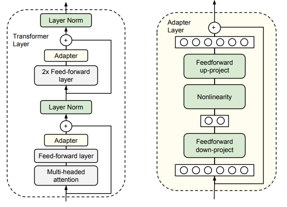
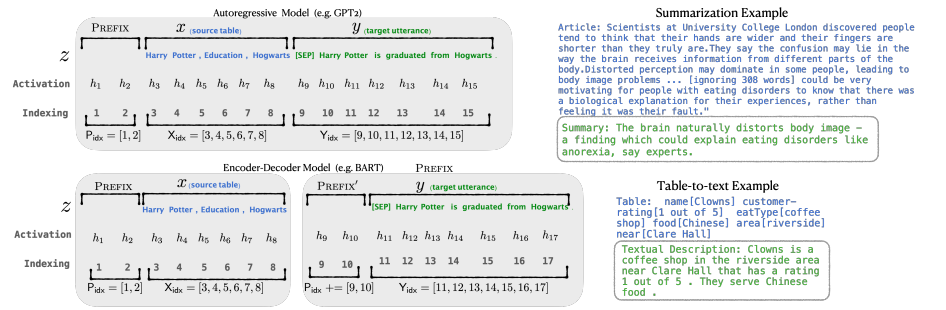
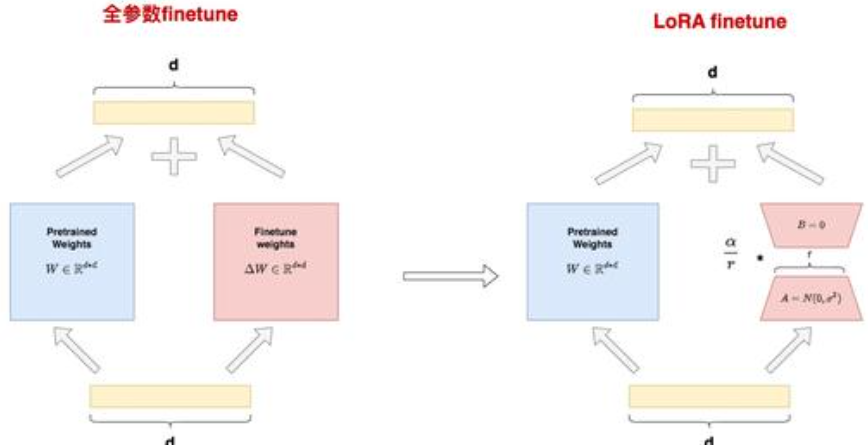
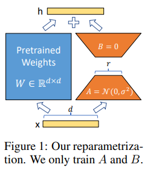
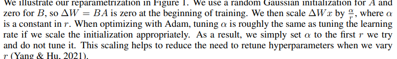

大模型系列(一)- LoRA
论文代码： https://github.com/microsoft/LoRA.
转载自:图解大模型微调系列之：大模型低秩适配器LoRA（原理篇） - 知乎
图解大模型微调系列之：大模型低秩适配器LoRA（源码解读与实操篇） - 知乎
大模型系列(一)- LoRA
1. 全参数微调
全量微调指的是，在下游任务的训练中，对预训练模型的每一个参数都做更新。
缺点：训练代价昂贵，在微调中发现有bug时覆水难收。
启发：由于模型在预训练阶段已经吃了足够多的数据，收获了足够的经验，因此我只要想办法给模型增加一个额外知识模块，让这个小模块去适配我的下游任务，模型主体保持不变（freeze）即可。
2. Adapter Tuning与Prefix Tuning
Adapter Tuning与Prefix Tuning是Lora出现之前两种主流的微调方法
2.1 Adapter Tuning
Adapter Tuning的方法有很多种，以arxiv.org/pdf/1902.00751为例，该篇文章是LoRA论文中提及这项技术时所引用的第一篇文章。

在微调时，除了Adapter的部分，其余的参数都是被冻住的（freeze）
显著劣势：添加了Adapter后，模型整体的层数变深，会减缓训练速度和推理速度，
原因是：
- 需要耗费额外的运算量在Adapter上
- 当我们采用并行训练时（例如Transformer架构常用的张量模型并行），Adapter层会产生额外的通讯量，增加通讯时间
2.2 Prefix Tuning
Prefix Tuning的方法也有很多种，在这篇文章中2101.00190通过对输入数据增加前缀（prefix）来做微调。当然，prefix也可以不止加在输入层，还可以加在Transformer Layer输出的中间层。

如上图所示：
- 第一个示例对于GPT这样的生成式模型，在输入序列的最前面加入prefix token，图例中加入2个prefix token，在实际应用中，prefix token的个数是个超参，可以根据模型实际微调效果进行调整。
- 第二个示例对于BART这样的Encoder-Decoder架构模型，则在x和y的前面同时添加prefix token。
在后续微调中，我们只需要冻住模型其余部分，单独训练prefix token相关的参数即可，每个下游任务都可以单独训练一套prefix token。
prefix的作用：
引导模型提取x相关的信息，进而更好地生成y。例如，我们要做一个summarization的任务，那么经过微调后，prefix就能领悟到当前要做的是个“总结形式”的任务，然后引导模型去x中提炼关键信息；如果我们要做一个情感分类的任务，prefix就能引导模型去提炼出x中和情感相关的语义信息，以此类推。
缺点：
- 较难训练，且模型的效果并不严格随prefix参数量的增加而上升，这点在原始论文中也有指出
- 会使得输入层有效信息长度减少。为了节省计算量和显存，我们一般会固定输入数据长度。增加了prefix之后，留给原始文字数据的空间就少了，因此可能会降低原始文字中prompt的表达能力。
3. LoRA
LoRA（Low-Rank Adaptation，低秩适配器）
LoRA的原理见第四节

全参数微调与Lora微调的区别
全参数微调：
- ：预训练权重，在微调的过程中被冻住
- ：微调增量权重
- 参数微调量：
输出
Lora微调：
- ：低秩矩阵A，其中r被称为秩，对A使用高斯初始化
- ：低秩矩阵B，采用零初始化
- 参数微调量：
输出
因此减少了Lora微调在r远小于d的情况下大大降低了参数微调量。
原论文中提到过对于两个低秩矩阵，会用超参 α （一个常数）来做调整
在实操中，一般取
为什么对A采用高斯初始化，对B采用零初始化：
让训练刚开始时B的值为0，这样不会给模型带来额外的噪声。根据Lora一作在github issue上的回答，A采用零初始化，B采用高斯初始化也可以。当前还没有发现转换 A,B 初始化方式产生的显著区别，只要这两者中任意一者为0，另一者不为0即可。
3.1 Lora整体架构

3.2 LoRA的训练和推理过程
在实际操作中,可以在任何你想要的模型层上做LoRA操作，比如Transformer中的、MLP层的权重、甚至是Embedding部分的权重。
3.2.1 训练
在训练过程中，固定住预训练权重 W ，只对低秩矩阵 A 和 B 进行训练。在保存权重时，我们只需保存低秩矩阵的部分即可。LoRA原论文统计得到，这样可以大幅度减少显存的消耗和模型的大小。
训练的每一时刻，LoRA都能做到节省显存吗？：
考虑backward时对计算梯度，由公式可以推出：
对比全量微调公式
会发现公共项，这意味着为了计算，的梯度，我们需要用到和全参数微调过程中一样大小的中间值结果。因此对LoRA来说，这一层的峰值显存，和全量微调基本是一致的，算上一项的话则高于全量微调。
那么为什么LoRA能从整体上降低显存使用？
- LoRA并不是作用在模型的每一层，例如论文里的LoRA只作用在attention部分
- LoRA虽然会导致某一层的峰值显存高于全量微调，但计算完梯度后，这个中间结果就可以被清掉了，不会一致保存。
- 当待训练权重从
d*d降为2*r*d时，需要保存的optimizer states也减少了。
3.2.2 推理
按照，合并低秩矩阵和预训练权重，然后正常做forward推理。这样我们完全不会更改模型的架构，因此不会像Adapter Tuning一样产生推理上的延时。
同时可以分开保存预训练权重W和低秩权重BA，对于不同的下游任务只利用保存的预训练权重W来训练不同的低秩权重BA。这意味着不同的下游任务所保存的低秩权重BA是不同的，在做相应的下游任务推理时只需要把相应任务对应的低秩权重BA合并到预训练权重上即可。(在源码中就算合并了预训练权重W和低秩权重BA，在微调期间也可以把它们区分开来。)
4. LoRA低秩适配的原理
4.1 秩
原理还介绍就不用学了，大学白上了。
秩表示的是矩阵的信息量。如果矩阵中的某一维，总可以通过其余维度线性推导而来，那么对模型来说，这一维的信息是冗余的，是重复表达的。
全参数微调中的增量权重 ΔW 可能也存在冗余的信息，因此我们并不需要用完整尺寸来表示它。可以用SVD分解（奇异值分解）来找出ΔW中真正有用的特征维度。
4.2 奇异值分解
对任意m行n列的矩阵M，M可以被分解为如下所示：
其中：
- U是m行m列的正交矩阵，该矩阵的每一个列向量都是的特征向量
- V是n行n列的正交矩阵，该矩阵的每一个列向量都是的特征向量
- 是m行n列对角阵，将或的特征值得到的就是该矩阵主对角线上的元素，也可以看成矩阵A的奇异值。
以n>m的矩阵M举例：
当M的秩为a(a<m)时，M可以被表示为 ，其中是的前a列，大小为（m，a），的大小为（a，m），因此用计算M的参数量变为了，在a比较小时明显小于M自身的参数量。
当n=m或者n<m的状况同理
4.3 LoRA低秩适配
问题在于能做奇异值分解的前提是已知，而实践中作为全参数微调中的权重增量，如果你不全参数微调一遍，又怎么能知道长什么样呢？而如果你做了全量微调，那还要低秩适配做什么呢？
数学方法不通，就让模型自己去学习怎么做奇异值分解。因此LoRA最终的低秩适配策略是：我把秩当成一个超参，再让模型自己去学低秩矩阵。
4.4 超参
原论文中对超参的解释

大致意思是说，在我们采用Adam做优化器时，调整的作用就相当于调整learning rate。一般而言，我们把设置为我们第一次做实验时设置的 ，然后就把α固定下来，之后只调整 r 即可，这样做的好处是当我们尝试不同的时，我们不需要再去调整别的超参了。
回顾一下我们的输出计算方法为：
其中， 表示预训练权重（旧知识）， 表示增量权重 的近似（新知识）。理论上说，当 较小时，我们提取的是 中信息含量最丰富的维度，此时信息精炼，但不全面；当 较大时，我们的低秩近似越逼近，此时信息更加全面，但带来的噪声也越多（含有很多冗余无效的信息）。
基于以上的猜想，在第一次实验时要尽量把r调的比较大，期望把全部的信息都包括进来，尽管会有很多无效信息，这时我们认为所包含的信息量已经近似于，但是这时候并没有实现参数量的减少。这时我们设置，意味着我们假定LoRA低秩微调的效果和全参数微调持平，之后再调整r的大小以期待减少参数量的同时不减少包含的信息量，即依旧与近似。
需要注意的是每一次r的调整意味着BA都重新学习了，不是一开始的BA
以4.2节的例子为例，尽管我们没采用全量微调，但如果采用全量微调，是客观存在的，它可以奇异值分解:。
我们一开始选取一个很大的r，因此它大概率大于的秩，在减小r的过程中，学习到的BA越来越接近真正的低秩分解的。
- 若选取的r大于的秩，则B的秩大于的秩，代表选取了更多的列，多出来的列是冗余的信息。
- 若选取的r小于的秩，则B的秩小于的秩，代表选取了更少的列，丢失了一部分信息。
问题：为什么要有参数,直接调整r的大小，使得学习到的B近似于，A近似于就行了
我个人认为提出来一个参数,也无非是使得BA的元素都除以参数而已，与直接使用没有本质上的区别。这里多一个参数用以设定为第一次实验r的值，感觉是起记录的作用。